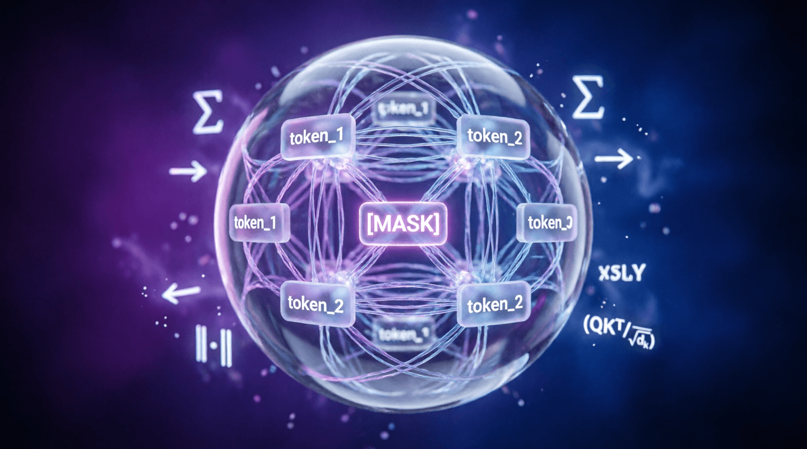

Урок 15: Автокодировщики и GAN
ML-инженер • Блок 3: Современные тяжелые архитектуры
Мы завершаем Блок 3: Современные тяжелые архитектуры. Прежде чем совершить переход к инженерии больших языковых моделей (LLM), нам необходимо освоить два фундаментальных генеративных подхода: скрытое сжатие данных и состязательное обучение. В этом уроке мы разберем математику вариационных автокодировщиков (VAE) и структуру генеративно-состязательных сетей (GAN).
В отличие от классического автокодировщика, который сжимает объект в фиксированный вектор, VAE (Variational Autoencoder) отображает входные данные в непрерывное вероятностное распределение (задает вектор средних значений $\mu$ и вектор дисперсий $\sigma$).
Чтобы обучать такую сеть методом обратного распространения ошибки, мы сталкиваемся с проблемой: операция случайного сэмплирования недифференцируема. Для обхода этого ограничения применяется Трюк с репараметризацией (Reparameterization Trick): случайность выносится наружу в виде независимого шума $\epsilon \sim \mathcal{N}(0, \mathbf{I})$:
import torch
import torch.nn as nn
class VAE(nn.Module):
def __init__(self, input_dim, latent_dim):
super().__init__()
# Энкодер возвращает два вектора: mu и log_var (логарифм дисперсии)
self.encoder_fc = nn.Linear(input_dim, 256)
self.fc_mu = nn.Linear(256, latent_dim)
self.fc_log_var = nn.Linear(256, latent_dim)
# Декодер восстанавливает исходный объект из латентного пространства
self.decoder = nn.Sequential(
nn.Linear(latent_dim, 256),
nn.ReLU(),
nn.Linear(256, input_dim),
nn.Sigmoid()
)
def reparameterize(self, mu, log_var):
# Переводим логарифм дисперсии в стандартное отклонение (sigma)
std = torch.exp(0.5 * log_var)
# Генерируем случайный шум той же формы, выводя случайность из графа вычислений
eps = torch.randn_like(std)
return mu + eps * std
def forward(self, x):
h = torch.relu(self.encoder_fc(x))
mu = self.fc_mu(h)
log_var = self.fc_log_var(h)
# Применяем трюк репараметризации
z = self.reparameterize(mu, log_var)
# Восстанавливаем объект
x_recon = self.decoder(z)
return x_recon, mu, log_varЛосс VAE состоит из двух частей. Первая — ошибка реконструкции (например, Binary Cross Entropy), заставляющая декодер точнее восстанавливать данные. Вторая — Дивергенция Кульбака — Лейблера (KL Divergence), которая штрафует латентное пространство за отклонение от стандартного нормального распределения, не позволяя сети изолировать кластеры данных друг от друга:
GAN (Generative Adversarial Networks) реализуют концепцию теории игр — минимаксную игру двух нейросетей, обучающихся параллельно:
# Демонстрация одного шага состязательного тренировочного цикла (Мин-Макс игра)
# Инициализация моделей
generator = nn.Sequential(nn.Linear(100, 784), nn.Tanh())
discriminator = nn.Sequential(nn.Linear(784, 1), nn.Sigmoid())
criterion = nn.BCELoss()
opt_d = torch.optim.Adam(discriminator.parameters(), lr=0.0002)
opt_g = torch.optim.Adam(generator.parameters(), lr=0.0002)
# ---- Шаг 1: Обучение Дискриминатора распознавать ложь ----
opt_d.zero_grad()
real_data = torch.randn(16, 784) # Реальные картинки
noise = torch.randn(16, 100) # Случайный шум
fake_data = generator(noise) # Подделки Генератора
loss_real = criterion(discriminator(real_data), torch.ones(16, 1)) # Метка 1 для реальных
loss_fake = criterion(discriminator(fake_data.detach()), torch.zeros(16, 1)) # Метка 0 для подделок
loss_d = loss_real + loss_fake
loss_d.backward()
opt_d.step()
# ---- Шаг 2: Обучение Генератора обманывать Дискриминатор ----
opt_g.zero_grad()
# Важно: Мы НЕ деатчим fake_data здесь, градиенты должны течь сквозь Дискриминатор в Генератор
loss_g = criterion(discriminator(fake_data), torch.ones(16, 1)) # Генератор хочет, чтобы подделкам дали метку 1
loss_g.backward()
opt_g.step()Допишите математический расчет KL-дивергенции для класса VAE. Формула для одного элемента латентного пространства:
import torch
import torch.nn as nn
import torch.nn.functional as F
def vae_loss(x_recon, x_original, mu, log_var, beta=1.0):
"""
Полная функция потерь VAE.
Args:
x_recon: восстановленные данные
x_original: исходные данные
mu: вектор средних значений латентного распределения
log_var: логарифм дисперсии латентного распределения
beta: коэффициент веса KL-дивергенции (β-VAE)
Returns:
total_loss: сумма reconstruction loss и KL divergence
"""
# 1. Reconstruction loss (Binary Cross Entropy для нормализованных [0,1] данных)
recon_loss = F.binary_cross_entropy(x_recon, x_original, reduction='sum')
# 2. KL Divergence: -0.5 * sum(1 + log_var - mu^2 - exp(log_var))
# ВАШ КОД ЗДЕСЬ: реализуйте формулу выше
# 3. Суммируем с коэффициентом beta
# total_loss = recon_loss + beta * kl_loss
return total_loss, recon_loss, kl_lossimport torch
import torch.nn as nn
import torch.nn.functional as F
def vae_loss(x_recon, x_original, mu, log_var, beta=1.0):
"""
Полная функция потерь VAE.
"""
# 1. Reconstruction loss (Binary Cross Entropy для нормализованных [0,1] данных)
recon_loss = F.binary_cross_entropy(x_recon, x_original, reduction='sum')
# 2. KL Divergence: -0.5 * sum(1 + log_var - mu^2 - exp(log_var))
kl_loss = -0.5 * torch.sum(1 + log_var - mu.pow(2) - log_var.exp())
# 3. Суммируем с коэффициентом beta
total_loss = recon_loss + beta * kl_loss
return total_loss, recon_loss, kl_loss
# Пример использования в тренировочном цикле:
# x_recon, mu, log_var = vae(x_batch)
# loss, recon, kl = vae_loss(x_recon, x_batch, mu, log_var, beta=1.0)
# loss.backward()Если обучать автокодировщик только на reconstruction loss, сеть может просто запомнить обучающие примеры, создав изолированные «островки» в латентном пространстве. При сэмплировании нового вектора $z$ из нормального распределения мы с высокой вероятностью попадем в «пустоту» между этими островками, и декодер выдаст бессмысленный шум.
KL-дивергенция $D_{KL}(\mathcal{N}(\mu, \sigma^2) \parallel \mathcal{N}(0, I))$ штрафует энкодер за то, что он создает латентные распределения, слишком далекие от стандартного нормального $\mathcal{N}(0, I)$. Это заставляет:
Приложение бесплатное. Было и останется.
Если проект помог вам или вашим близким — можете поддержать разработку добровольным переводом.
❤️ Спасибо за поддержку!
Перейти в каталог
